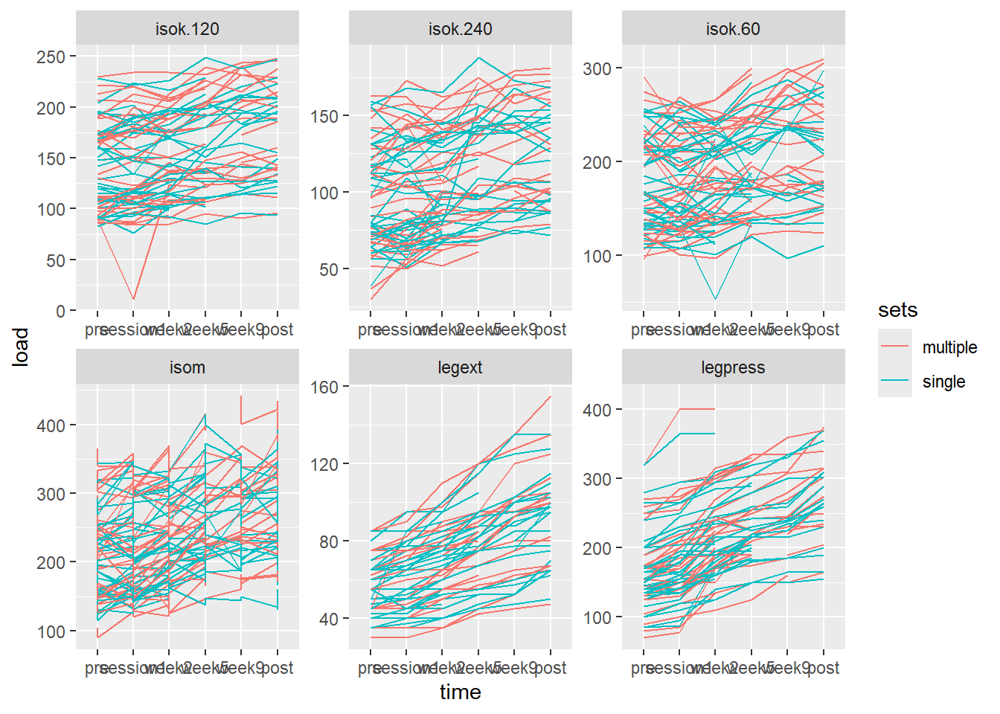
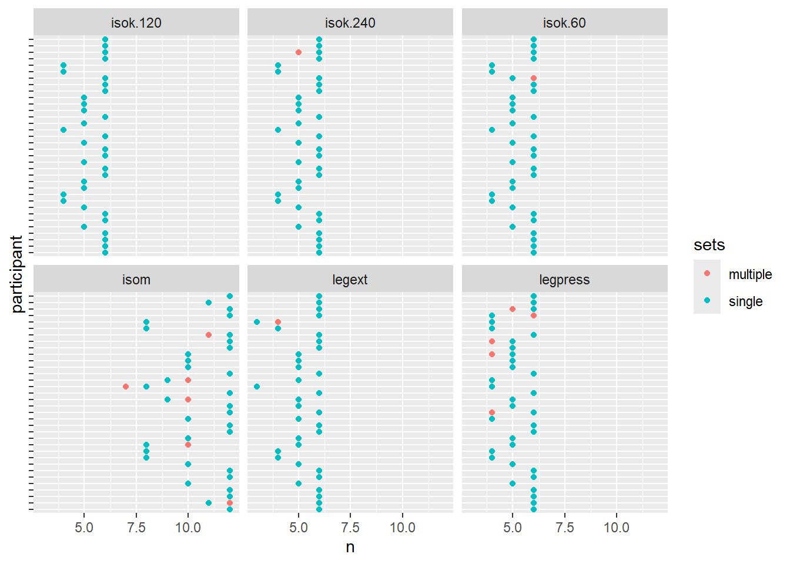

Below you will find a basic outline of the report and example code that we worked on today in class. Further below is the description of the assignment.
5.1 Introduction
5.2 Methods
5.2.1 Participants and study overview
5.2.2 Muscle strength and hypertrophy
5.2.3 Data analysis and statistics
5.3 Results
The average difference in lean mass changes between sets were 122.8, 95% CI: [8.6, 237], p = 0.036.
## Time points in strength data setstrengthvolume %>%distinct(exercise)
# A tibble: 2,856 × 8
participant sex include time sets leg exercise load
<chr> <chr> <chr> <fct> <chr> <chr> <chr> <dbl>
1 FP13 male incl pre single R legpress 115
2 FP13 male incl pre multiple L legpress 115
3 FP13 male incl pre single R legext 55
4 FP13 male incl pre multiple L legext 55
5 FP13 male incl session1 single R legpress 125
6 FP13 male incl session1 multiple L legpress 125
7 FP13 male incl session1 single R legext 55
8 FP13 male incl session1 multiple L legext 55
9 FP13 male incl week2 single R legpress 185
10 FP13 male incl week2 multiple L legpress 175
# ℹ 2,846 more rows
str %>%ggplot(aes(time, load, group =paste(participant, sets), color = sets)) +geom_line() +facet_wrap(~ exercise, scales ="free")
Warning: Removed 5 rows containing missing values or values outside the scale range
(`geom_line()`).

## How many measurements per participantstr %>%filter(!is.na(load)) %>%group_by(participant, exercise, sets) %>%summarise(n =n() ) %>%ggplot(aes(n, participant, color = sets)) +geom_point() +facet_wrap(~ exercise) +theme(axis.text.y =element_blank())
`summarise()` has grouped output by 'participant', 'exercise'. You can override
using the `.groups` argument.

## Use pre and post data # Combine pre data prior to data analysis# per exercise, leg, participant, and setsstr %>%mutate(time =if_else(time %in%c("pre", "session1"), "pre", time)) %>%filter(time %in%c("pre", "post")) %>%summarise(load =max(load, na.rm =TRUE), .by =c(participant, sex, time, sets, exercise, leg)) %>%print()
Warning: There were 7 warnings in `summarise()`.
The first warning was:
ℹ In argument: `load = max(load, na.rm = TRUE)`.
ℹ In group 62: `participant = "FP6"`, `sex = "female"`, `time = "post"`, `sets
= "multiple"`, `exercise = "legpress"`, `leg = "L"`.
Caused by warning in `max()`:
! no non-missing arguments to max; returning -Inf
ℹ Run `dplyr::last_dplyr_warnings()` to see the 6 remaining warnings.
# A tibble: 816 × 7
participant sex time sets exercise leg load
<chr> <chr> <chr> <chr> <chr> <chr> <dbl>
1 FP13 male pre single legpress R 125
2 FP13 male pre multiple legpress L 125
3 FP13 male pre single legext R 55
4 FP13 male pre multiple legext L 55
5 FP13 male post single legpress R 230
6 FP13 male post multiple legpress L 235
7 FP13 male post single legext R 97.5
8 FP13 male post multiple legext L 100
9 FP16 female pre single legpress R 95
10 FP16 female pre multiple legpress L 85
# ℹ 806 more rows
5.4 Discussion
5.5 Conclusion
In this assignment you will analyze and report on trial investigating the effect of resistance training volume on lean mass and muscle strength. The data are part of the exscidata package and can be accessed as data("strengthvolume") and data("dxadata"). Read the instructions carefully!
5.6 Organizing the report
Your report should consist of the sections Introduction, Methods, Results and Discussion. Each part of the report should be written as a reproducible document and a link or reference to the repository containing the source document(s) should be included in the report. Below follows detailed descriptions and requirements for each section.
5.6.1 Introduction
This section should consist of a description of the field, resistance-training volume and muscle strength and mass. Use at least five to ten references to introduce your audience and explain why you are doing the analysis/study. A tip is to use the QALMRI method, introduced in Assignment 4 to structure the reading of background information. It is up to you how you motivate the study and how you phrase the purpose of the study. It could be a hypothesis based on previous studies, it could also be question to fill a knowledge gap that you have identified in your literature review.
Structure the introduction in paragraphs. A first paragraph could contain a general introduction to the field, why is it of interest to investigate resistance-training? A second paragraph could specifically describe the specific field of resistance-training volume, why is important to know more about how we are likely to respond to different training volumes. The second paragraph should incorporate definitions important for your report, e.g., training volume, muscle mass and strength. Try to incorporate these definition as a fluid part of the text.
A third (or last) paragraph of the introduction should contain a statement regarding the purpose of the study. The purpose could be descriptive, hypothesis-driven or guided by a question. Although it could be considered a bit backward, you should explore the data sets before you select your question/hypothesis/purpose for it to be possible to answer.
5.6.2 Methods
The method should give a thorough overview of the study and specific details regarding data collection. You can read about the details of this specific study in (Hammarström et al. 2020). Use your own words to describe the study based on this description. A nice way to structure the methods section is to include subheadings:
Participants and study overview: Describe the participants and give an overview of all tests/measurements. Participants should be described in the first table of the report (Table 1). The overview of the tests/measurements should be done without double presentation as details should be presented in subsequent sections.
Specific descriptions (e.g. strength tests): Describe in detail how tests/measurements that you mentioned in the overview where conducted.
Data analysis and statistics: Describe how you treated the data prior to statistical tests or procedures and what tests/procedures were used to draw inference (or more generally, to answer your purpose). Describe how you present data (e.g. descriptive data with mean (SD), inference with confidence intervals etc.).
5.6.3 Results
Describe the results of your analysis. This description should make use of table and figures as well as a text that guides and structures the content to the reader. Think about it this way, the text should describe when and how to read the figures and tables. This means that all aspects of the results should be covered in the text. The figures and tables should also be “self explanatory”, this means that you have to include descriptive figure captions and descriptions of tables (see below for tips).
As the main purpose of the analysis should concern the effect of training volume on muscle mass and strength, it is natural that the comparison of training outcomes between volume conditions is the main analysis in the results. You may also have questions regarding the relationship between muscle strength and mass gains, if there are differences between men and women etc. Selection of statistical/analysis techniques should reflect the study question/purpose.
5.6.4 Discussion
Structure the discussion with a first paragraph describing the main results of the analysis, this could be the answer to your question or a statement regarding the study hypothesis. In the following paragraphs discuss all results that you have presented in the light of previous studies. It is your job to give the reader plausible interpretations and explanations of your results. This is how single scientific results are incorporated in our collective understanding. These interpretations can later be challenged, however if you give the reader good arguments and clear descriptions, your insights will be valuable to collective reasoning even if they turn out to be wrong in light of new data.
End the discussion with a summary or conclusion. Some journals request that you state your conclusions under a specific heading in the end of the report/article.
5.7 Organizing the data analysis
5.7.1 Data preparation
The data is already structured in the exscidata package. To access the data, use the following code:
To get and overview of the variables in each data set use ?strengthvolume and ?dxadata. In the dxadata the variables of interest are organized in a more convenient way using the code below:
# A tibble: 160 × 7
participant time sex include sets leg lean.mass
<chr> <chr> <chr> <chr> <chr> <chr> <dbl>
1 FP28 pre female incl multiple L 7059
2 FP28 pre female incl single R 7104
3 FP40 pre female incl single L 7190
4 FP40 pre female incl multiple R 7506
5 FP21 pre male incl single L 10281
6 FP21 pre male incl multiple R 10200
7 FP34 pre female incl single L 6014
8 FP34 pre female incl multiple R 6009
9 FP23 pre male incl single L 8242
10 FP23 pre male incl multiple R 8685
# ℹ 150 more rows
Hammarström, Daniel, Sjur Øfsteng, Lise Koll, Marita Hanestadhaugen, Ivana Hollan, William Apró, Jon Elling Whist, Eva Blomstrand, Bent R. Rønnestad, and Stian Ellefsen. 2020. “Benefits of Higher Resistance-Training Volume Are Related to Ribosome Biogenesis.” Journal Article. The Journal of Physiology 598 (3): 543–65. https://doi.org/10.1113/JP278455.